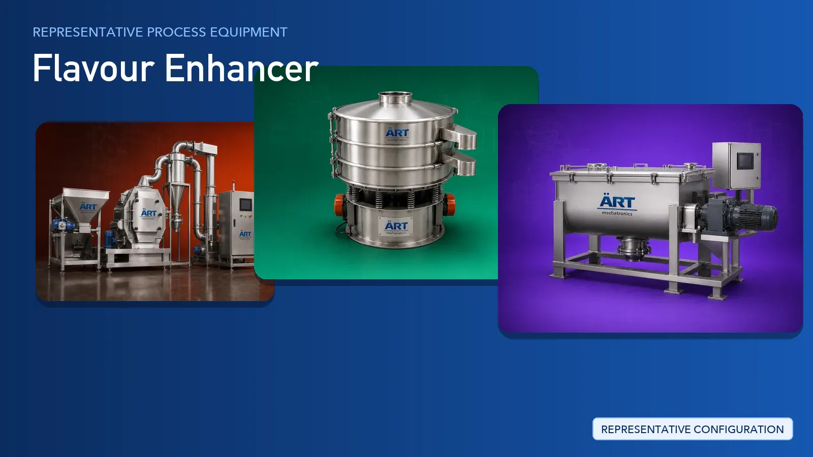

Flavour Enhancer Plant & Machinery Solutions (Food Flavour, Salt, Sugar & MSG)
Flavour enhancers cover a broad group of food ingredients including food flavour powders, salt, sugar and monosodium glutamate (MSG), supplied to food manufacturers, spice blenders, snack producers and retail brands.

About Flavour Enhancer processing
ART Mechatronics provides complete turnkey solutions for flavour enhancer processing plants, offering systems for material handling, grinding, sieving, blending, drying, dust control and packing. Our solutions are designed for hygienic powder handling, batch-to-batch consistency and automated operation for domestic and export markets.
Complete Flavour Enhancer Process Flow
Bagged and bulk raw materials such as flavour powders, salt, sugar and MSG crystals are received, decanted and fed into the plant.
Ensures dust-controlled, continuous material feed.
Crystals, lumps and coarse material are reduced to the required powder or granule form.
Delivers:
- Consistent particle size
- Free-flowing powder
- Reduced lump formation
Ground material is screened so oversize particles are separated and returned for re-grinding.
Ensures uniform grade separation.
Base powders, flavour actives, anti-caking and free-flow agents are blended into a homogeneous batch.
Ensures:
- Uniform distribution of flavour actives
- Batch-to-batch consistency
- Gentle handling of fine powders
Where the product requires it, material is dried so the powder stays free-flowing and stable in storage.
Supports controlled, uniform drying.
Fine powder released at grinding, sieving, blending and packing points is captured at source.
Supports a clean working environment and product safety.
Finished powder or granules are dosed into sachets, pouches, jars or bulk packs and checked before dispatch.
Suitable for retail sachets, pouches and bulk packs.
Machinery Required for Flavour Enhancer Plant
Turnkey Flavour Enhancer Plant Solutions
ART Mechatronics offers complete turnkey solutions for flavour enhancer processing plants, including:
- Process design & plant layout
- Grinding and sieving systems
- Blending and dosing systems
- Drying and moisture control systems
- Dust collection & plant hygiene systems
- Automation & control panels
- Packaging line integration
- Installation & commissioning
- After-sales support
We customize solutions based on:
- Product type (food flavour, salt, sugar, MSG)
- Powder or granule form
- Production capacity
- Blending and dosing requirements
- Packaging format
Why Choose ART Mechatronics for Flavour Enhancer
- Expertise in powder and granule processing systems
- Integrated grinding, sieving and blending lines
- Hygienic food-grade machinery design
- Dust control engineered into the plant, not added later
- Automated, repeatable batch operation
- Global export capability
Machinery in a Flavour Enhancer plant
Where it's used
Get pricing & specs for the Flavour Enhancer plant
Share the product, target capacity, current process and plant location. These details help our engineers discuss the right machine or line configuration.
One partner, from design to start-up
ART Mechatronics designs, manufactures, installs and commissions your Flavour Enhancer plant solution with regional presence in India, UAE and Thailand.